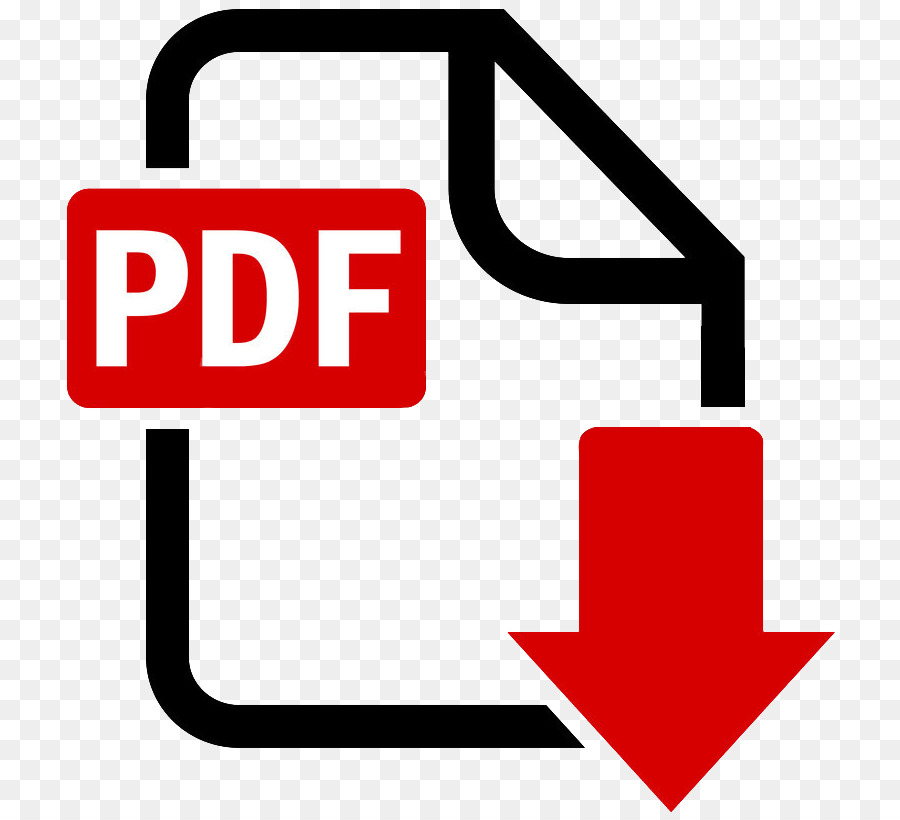

Ceno Fact Sheet
 Download PDF
Overview
What is Ceno?
The world’s first mobile browser that circumvents current Internet censorship methods and local Internet outages using peer-to-peer (p2p) technology
Ceno stands for:
- censorship.no, envisioned as part of an Internet that is free of intrusive and unjustified surveillance, censorship and oppression
- Developed and launched by eQualitie
Works on:
Android mobile devices
Get it on:
- Ceno website, Google Play, Github, Paskoocheh, and Zanga.tech
- No special permissions are required
Why:
- Designed to allow people anywhere in the world to access web content in censored or Internet-restricted regions, and in countries where connectivity is unreliable or costly
- Can be used to create a bridge for others to access censored or restricted content
So what?
- Already helping thousands of civilians, NGOs, investigative journalists and independent media globally to access and share web content
- Ceno content remains stable and cannot be forcibly removed by external agents, even during media censorship events, shutdowns, natural disruptions, unrest, conflict, and war
- Ceno’s p2p routing and distribution of storage can reduce bandwidth and energy use
- Performance improves with scale (unlike the proxy/virtual private network (VPN) model); more users reduces latency and increases storage
How:
- Works like BitTorrent - pulling, reserving and sharing content from many networked sources rather than from one web server source - but is a browser
- Underlying decentralized p2p network uses established open-source Ouinet library and BitTorrent protocols, making it resilient and reliable
- Looks and feels like other browsers
- Equipped to share cached content offline and on local area networks (LANs)
Who is eQualitie?
- Montreal-based digital security firm that has developed open-source and reusable systems and tools since 2010, with a focus on online privacy, resilience and self-determination
- Maintains the Deflect.ca service
- Leads several initiatives focused on free and secure communications in authoritarian states
- Founded by Dmitri Vitaliev
In use today:
- Average monthly users: 10,000+
- New monthly users: 10,000
- Majority users by country: Ukraine 48%; Russia 17%; Iran 15%; Myanmar 5%; Poland, US and Germany 3%
How Ceno Works

Numbers
Ceno to April 2022
- Downloads from Google Play Store: 33,297
- Installs from alternative marketplaces: 6,514
- Pulls from Docker Hub: 597
- Cloned from GitHub repositories: 1,768
- Unique participants in March 2022: 28,914
- Ceno bridges worldwide: 25 (6 in Ukraine, 9 in Russia and others in the Middle East, Eastern Europe and Asia)
- Bootstrap servers to ensure that in-country nodes can use BitTorrent during complete network shutdowns: 8 (in Eastern Europe, Myanmar, Iran and Russia)
Ceno Analytics
The Ceno browser displays the resources provided directly from the origin to each user (served via injectors and received from the p2p network) and how much each user’s specific device has shared with other users.
Key performance metrics for a Ceno white-label release include (i) the number of reachable bridge nodes and origin sources in the DHT, and (ii) the bandwidth and number of distinct web resources served by injector servers.
Other metrics can be designed and developed for greater visibility and performance measurement, taking into account Ceno’s decentralization function. Without identifying users, it is possible to closely estimate participation through (i) pseudonymous network identifiers and their usage of network injectors, (ii) country of origin and (iii) queries of the distributed hash table for unique device identifiers.
Integration of the Clean Insights SDK is being explored as a way to give users robust privacy-respecting analytics that measure metrics including distributed cache usage from the user’s vantage point.
Ouinet in April 2022
Ouinet’s injectors introduced approximately 2 million pages (602 GB of data) to the decentralized content-sharing network, from more than 30,000 unique websites.
Internet shutdowns
Internet shutdowns is a broad term covering various Internet access restriction scenarios. Precise technical information on shutdowns is often missing from media coverage. A shutdown can refer to the following:
- Level 1: A complete or partial failure of Internet services, occurring due to censorship, cyberattacks, natural disasters, police or security services actions or errors. Ceno deals with scenarios of extreme network censorship, when VPNs are generally no longer available (e.g., Russia in 2022, Belarus in 2020 and Iran in 2019) or when international transit connections are artificially throttled (e.g., Indian Kashmir in 2019–2020 and Cuba).
- Level 2: A ban on international transit connections (e.g., Kazakhstan in 2021), such that no servers or services located outside the country are accessible, yet the local or national network continues to function. Ceno continues to work in these localized scenarios.
- Level 3: When electricity no longer functions, such as during national disasters and in wartime (e.g., Mariupol in 2022). Ceno still works peer to peer when devices remain powered and are in close proximity.
A growing number of countries have introduced sophisticated surveillance and network filtering technologies to undermine existing censorship circumvention methods, and to restrict communications and the free flow of information on the Internet. Some have resorted to cutting off entire networks – across neighborhoods, regions and nations – from international connectivity.
Most circumvention techniques in use today require the user to first connect to a relay located in an uncensored zone. The resulting “cat and mouse” game between censor and circumvention method (with the latter resorting to creative proxy distribution, traffic obfuscation, collateral damage, partnerships with ISP for refraction networking, and so on) is no longer sufficient to ensure connectivity and digital content propagation.
How Ceno side-steps censorship
Ultimately, existing censorship methods have a single point of failure: users need to penetrate a firewall where the censor is watching. As witnessed in Iran in November 2019, Belarus in 2020, Kazakhstan in 2021 and during the ongoing disconnection of unfettered Internet access in Russia this year, circumvention methods increasingly do not work for users in these countries. Ceno has proven itself as a functioning solution in these environments. Wider adoption will ensure more efficient, low latency and effective decentralized peer-to-peer communications and distributed caching.
User comments
Russia
“Nice browser. Without VPN I was able to open blocked resources. But it's also useful when you don't have connection.”
“Because Russia threatens to block VPNs, Ceno is promising. Also because for your ISP it's like some Torrent traffic, and torrents are something very normalized in Russia unlike western countries where copyright is really respected. Also in Moscow police started asking people to show their phones and they look at apps that you have. I had this kind of control. They look at VPNs or messengers like Signal or Telegram. And Ceno looks like a normal browser, so when they asked what it is I said it is a browser, no problem, no questions. I just chose to regularly clear browsing history at exit. So besides helping to access websites, it also looks quite innocent which is great.”
“Thanks for a great product. Your browser opens the site http://meduza.io much faster than the app from @meduzaproject.”
Myanmar
“There was a lot of inconvenience due to the blocked websites. It's good to see that it works well with this app. This is our digital rights. So I will continue to use it sometimes.”
“There are more features I'd like to see in the app, but it is totally a convenient and useful application.”
Iran
“This app is one of our few hopes in times of serious Internet disruptions in Iran. Please keep it going and make it better and better. Thank you.”
“It is a good browser, especially for us Iranians, who do not have the possibility of free use of the Internet and everything is filtered by the government, even filter breakers.”